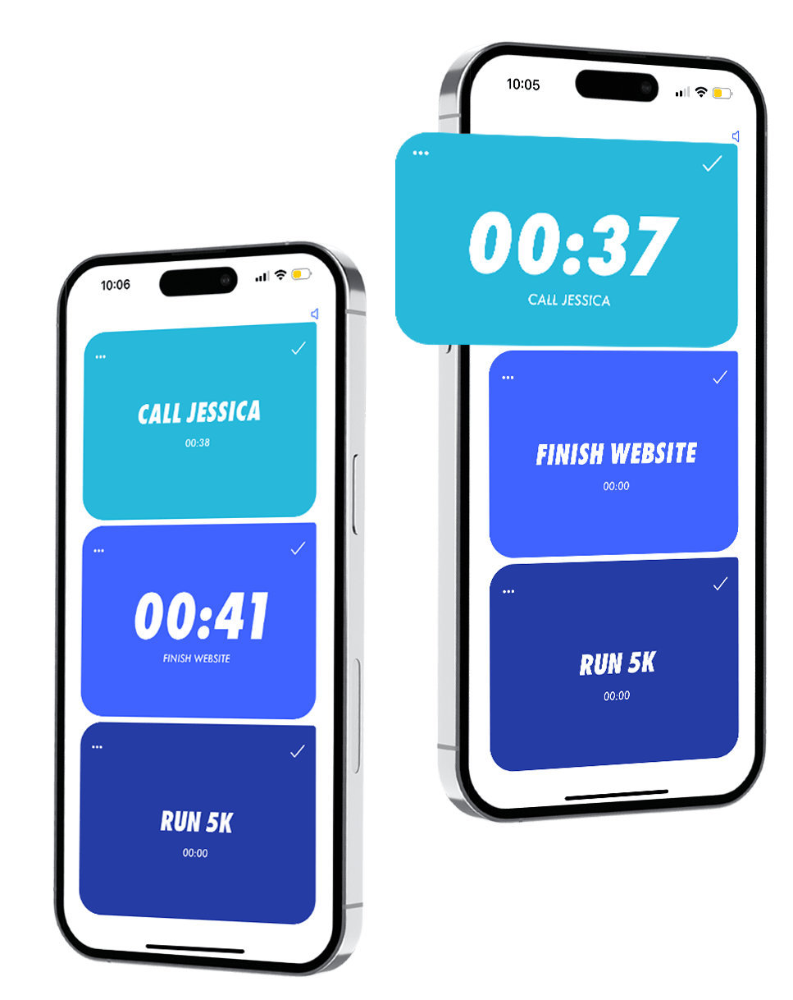

Guides
- How to stop procrastinating with a 3-task list (what the research says, 2026)
- Pomodoro timer on iPhone: how to do it with the Clock app, Focus or an app (2026)
- The 3-task method (Ivy Lee and the Rule of 3): how to plan your day with only 3 tasks
- Best to-do apps that limit you to 3 tasks a day (2026)
- Best simple to-do list apps for iPhone in 2026 (Reviewland)
- Todoist alternatives for iPhone in 2026 (Reviewland)
En español:
- Cómo dejar de procrastinar con una lista de 3 tareas (lo que dicen los estudios, 2026)
- Temporizador Pomodoro en el iPhone: cómo hacerlo con Reloj, Concentración o una app (2026)
- El método de las 3 tareas (Ivy Lee y la regla de 3): cómo planificar el día con solo 3 tareas
- Las mejores apps de tareas que te limitan a 3 al día (2026)